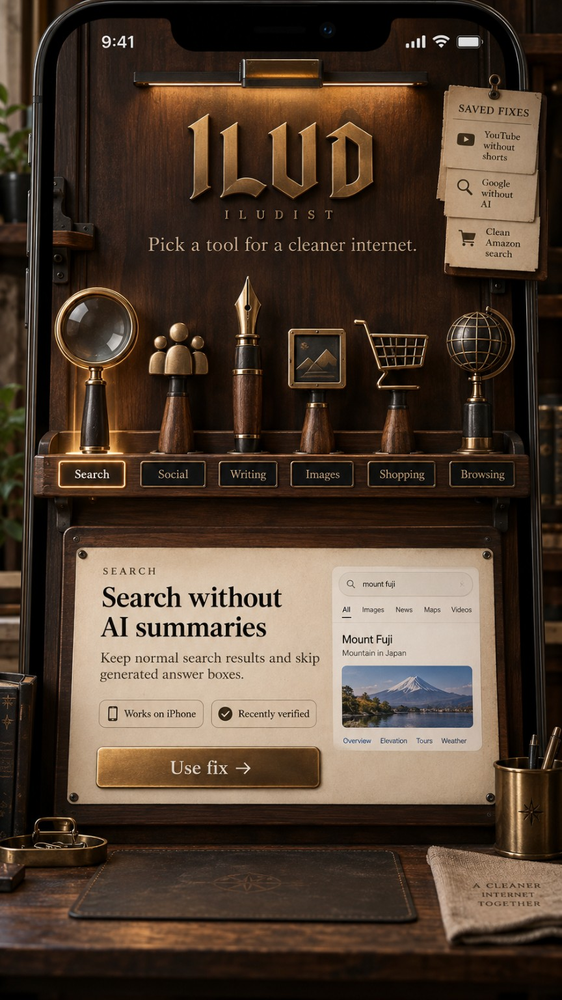
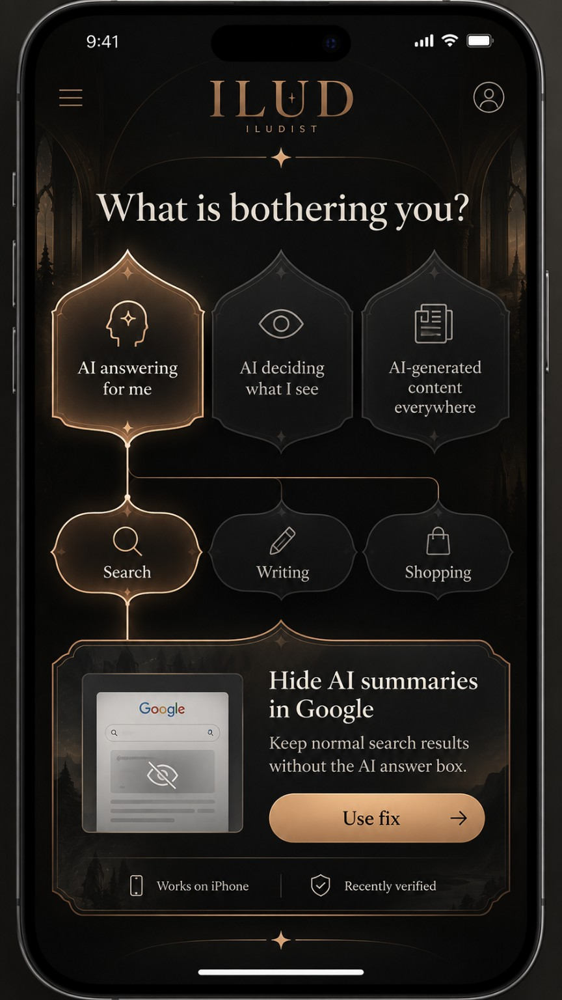
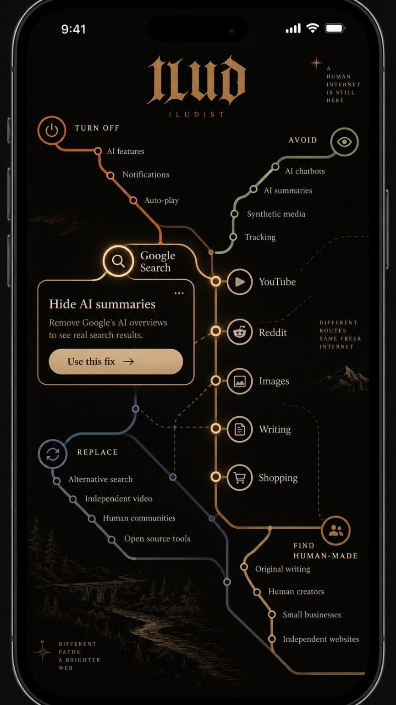
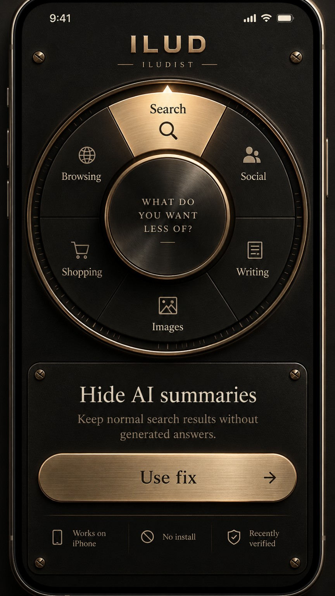
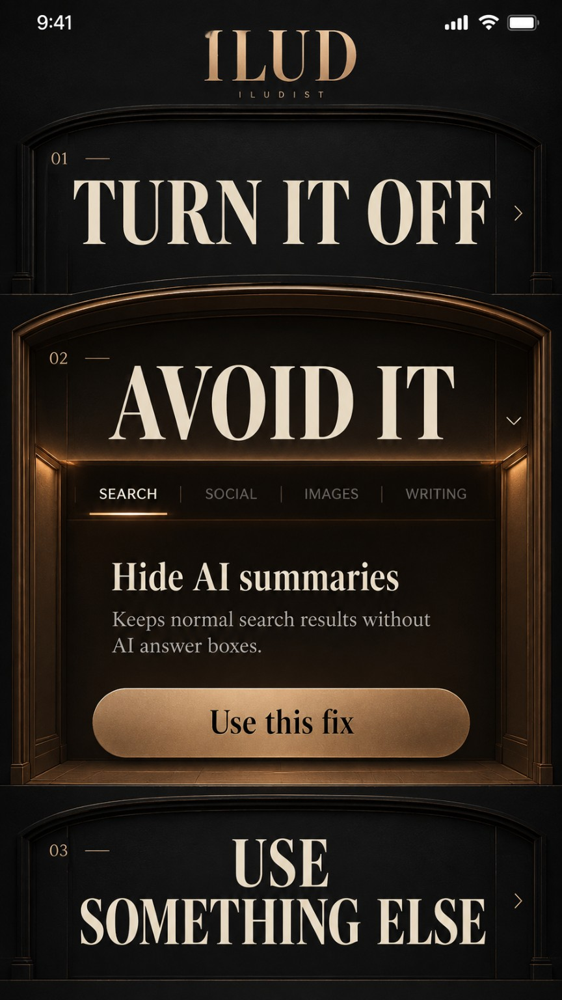
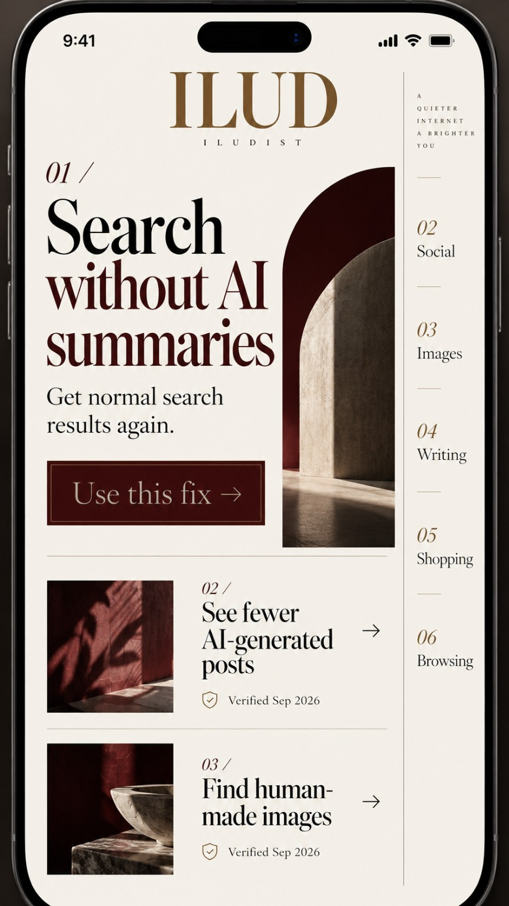
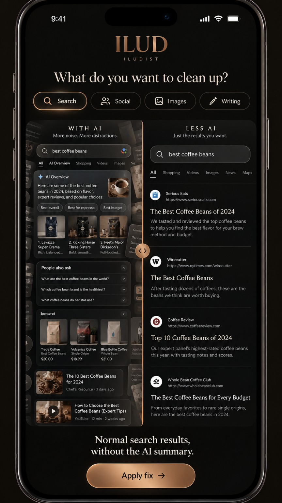
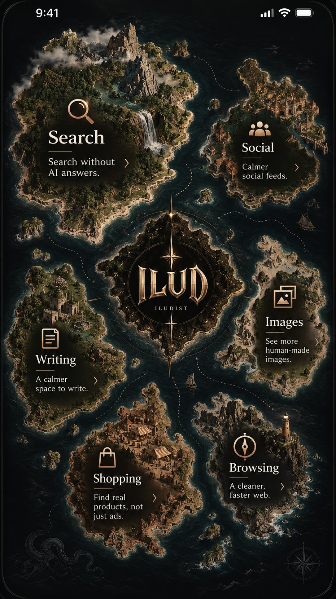
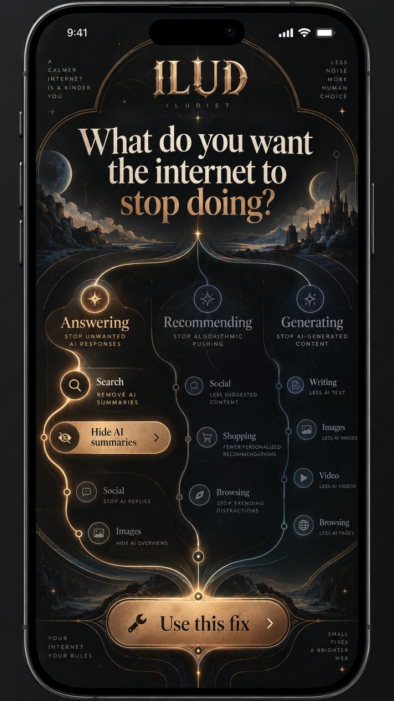
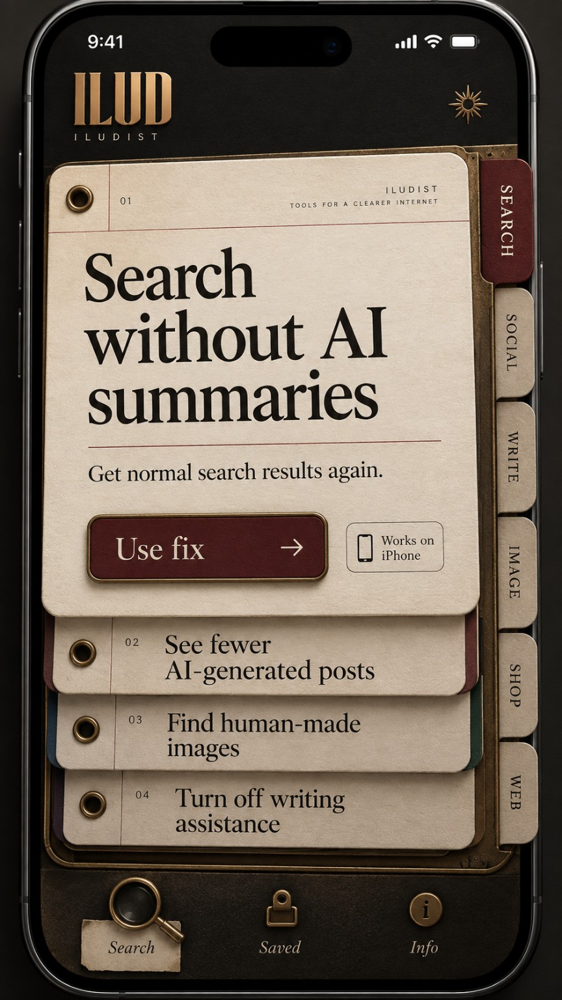

REFERENCE 01EXPERIMENT 01
The Cabinet
Lift a tool from a walnut and brass travelling case.
Open application View supplied referenceChoose an instrument. Each application carries the same carefully stocked catalogue, interpreted through a different interaction.
10 INDEPENDENT APPS
REFERENCE 01Lift a tool from a walnut and brass travelling case.
Open application View supplied reference
REFERENCE 02Move from a frustration to a practical path.
Open application View supplied reference
REFERENCE 03Follow a line, choose a stop, open a useful destination.
Open application View supplied reference
REFERENCE 04Turn a weighted selector with momentum and detents.
Open application View supplied reference
REFERENCE 05Open a door to turning off, avoiding, or replacing.
Open application View supplied reference
REFERENCE 06Read and turn a quiet, architectural folio.
Open application View supplied reference
REFERENCE 07Slide between illustrative noisy and quieter layouts.
Open application View supplied reference
REFERENCE 08Navigate a spatial map of everyday tools.
Open application View supplied reference
REFERENCE 09Choose what should stop and follow the illuminated branch.
Open application View supplied reference
REFERENCE 10Swipe, lift, and save layered paper remedies.
Open application View supplied reference